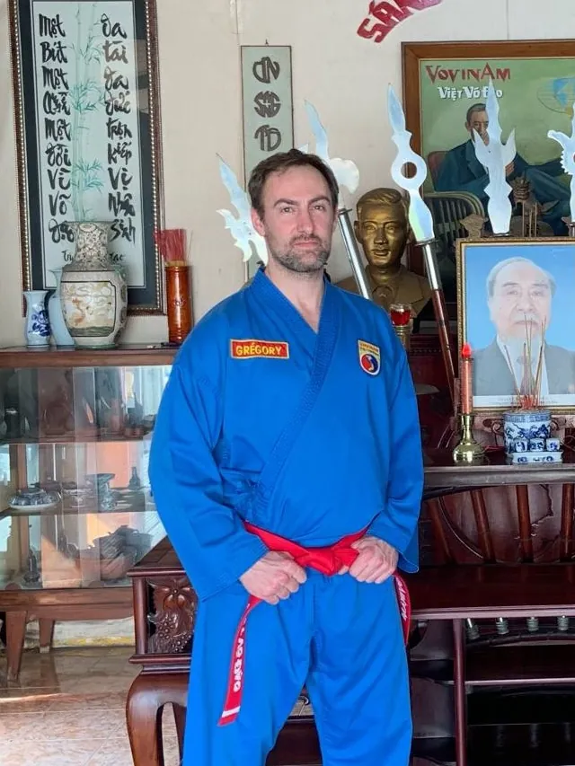

Le Professeur du VDST Port-Marly
Professeur diplômé d'État, 5e Đẳng, pratiquant de Vovinam Việt Võ Đạo depuis 1995. Il fonde le VDST Port-Marly en 2026 pour transmettre le Vovinam et ses valeurs tels qu'ils lui ont été enseignés.

Grégory débute le Vovinam à l'âge de 10 ans, en septembre 1995, à Emerainville, sous la direction de Võ Sư Albert Gouillon (6e Đẳng). Depuis, il n'a jamais cessé de pratiquer, d'enseigner et de se former, en France comme au Vietnam.
Coach sportif de profession, il s'appuie sur ses connaissances en anatomie, biomécanique et pédagogie pour offrir un enseignement de qualité, adapté à chacun, de l'enfant à l'adulte.
Il est l'un des membres fondateurs du TCHL France, dont il occupe actuellement le poste de secrétaire général élu au bureau.
« 30 ans de pratique m'ont appris une chose : la technique sans les valeurs ne tient pas. Mon objectif est que chaque élève, petit ou grand, progresse à son rythme, prenne confiance en lui et reparte avec les deux. Le Vovinam m'a énormément apporté. Je prends soin de le transmettre avec la même exigence et le même respect. »Võ Sư Grégory
Débute le Vovinam sous la direction de Võ Sư Albert Gouillon (6e Đẳng), assisté de Frédéric Frah.
Au départ en retraite de Võ Sư Albert, c'est Farid Aounallah qui reprend le club. Grégory devient alors son assistant.
En octobre 2005, il part pour la première fois au Vietnam, berceau du Vovinam, pour se former auprès de Võ Sư Nguyen Van Sen (9e Đẳng). Il est accompagné de Farid Aounallah et d'autres pratiquants des clubs d'Emerainville et de Noisiel. Au programme : deux semaines d'entraînement intensif, à raison de 4 heures par jour.
En juillet 2006, il repart au Vietnam, cette fois pour un séjour de cinq semaines.
Il fonde l'association IVVP à Paris, qu'il dirige jusqu'à sa fermeture en juin 2020.
Membre fondateur du TCHL France, il en est aujourd'hui le secrétaire général élu au bureau.
Il ouvre le club VDST Port-Marly pour transmettre le Vovinam tel qu'il lui a été enseigné.
Résultats obtenus en compétitions techniques, entre 2004 et 2011.
Venez tester sans engagement — tenue souple de sport et une bouteille d'eau suffisent, aucun équipement requis.